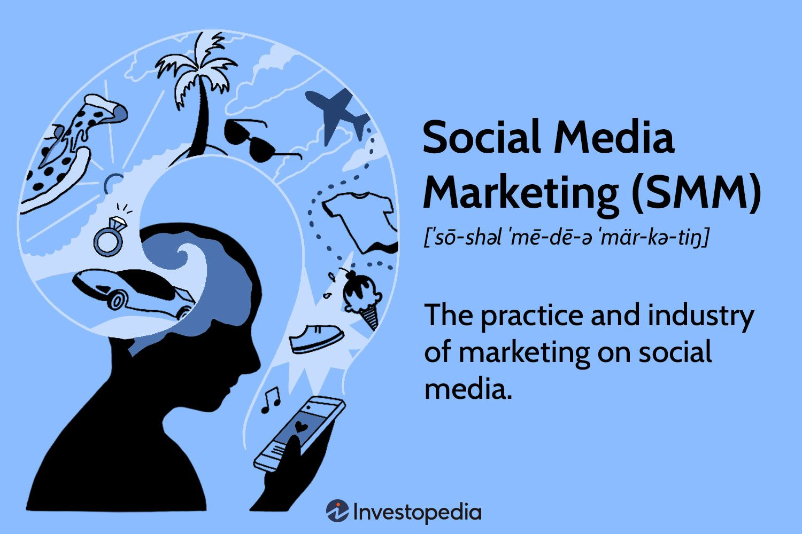

<!DOCTYPE html>
<html lang="en">
  <head>
    <meta charset="UTF-8" />
    <meta name="viewport" content="width=device-width, initial-scale=1.0" />
    <title style="font-size: 2.3rem; font-family: cursive">
      Digital Marketing Overview
    </title>
    <style>
      body {
        font-family: Arial, sans-serif;
        margin: 0;
        padding: 0;
        line-height: 1.6;
        color: #333;
        background-color: beige;
      }
      title {
        font-size: 2.5rem;
        font-family: cursive !important;
      }
      header {
        background-color: skyblue;
        color: #fff;
        padding: 20px 0;
        text-align: center;
      }
      .container {
        max-width: 800px;
        margin: auto;
        padding: 20px;
      }
      section {
        margin-bottom: 40px;
      }
      h2 {
        color: #333;
      }
      h5 {
        font-weight: bold;
      }
      p {
        color: #555;
      }
      img {
        max-width: 100%;
        height: auto;
        margin-bottom: 20px;
      }
      footer {
        background-color: #333;
        color: #fff;
        text-align: center;
        padding: 20px 0;
        position: fixed;
        bottom: 0;
        width: 100%;
      }
    </style>
  </head>
  <body>
    <header>
      <h1>Digital Marketing Overview</h1>
    </header>

    <div class="container">
      <section>
        <h2>Introduction</h2>
        
        <p>
          Digital marketing is the use of websites, apps, mobile devices, social
          media, search engines, and other digital means to promote and sell
          products and services. Digital marketing involves many of the same
          principles as traditional marketing and is often considered an
          additional way for companies to approach consumers and understand
          their behavior. Companies often combine traditional and digital
          marketing techniques in their strategies. But digital marketing also
          comes with its own set of challenges. Digital marketing started to
          become popular with the widespread adoption of the internet in the
          1990s.
        </p>
      </section>

      <section>
        <h2>Advantages and Disadvantages of Digital Marketing</h2>
        
        <p>
          Digital marketing benefits businesses of all sizes by giving access to
          the mass market at an affordable price. Unlike TV or print
          advertising, it allows truly personalised marketing. Digital marketing
          also comes with a number of challenges you should be aware of.
        </p>
        <div>
          <h4>Advantages of Digital Marketing</h4>
          <p>
            The main advantage of digital marketing is that a targeted audience
            can be reached costeffectively and measurably. Other digital
            marketing advantages include increasing brand loyalty and driving
            online sales.

            <br />
            <br />
            benefits of digital marketing include:
          </p>
          <div>
            <h5>Global reach</h5>
            <p>
              A website allows you to find new markets and trade globally for
              only a small investment.
            </p>
            <h5>Lower cost</h5>
            <p>
              A properly planned and well-targeted digital marketing campaign
              can reach the right customers at a much lower cost than
              traditional marketing methods.
            </p>
            <h5>Trackable, measurable results</h5>
            <p>
              Measuring your online marketing with web analytics and other
              online metric tools makes it easier to establish how effective
              your campaign has been. You can obtain detailed information about
              how customers use your website or respond to your advertising.
            </p>
            <h5>Personalisation</h5>
            <p>
              If your customer database is linked to your website, then whenever
              someone visits the site, you can greet them with targeted offers.
              The more they buy from you, the more you can refine your customer
              profile and market effectively to them.
            </p>
            <h5>Openness</h5>
            <p>
              By getting involved with social media and managing it carefully,
              you can build customer loyalty and create a reputation for being
              easy to engage with.
            </p>
            <h5>Social currency</h5>
            <p>
              Digital marketing lets you create engaging campaigns using content
              marketing tactics. This content (images, videos, articles) can
              gain social currency - being passed from user to user and becoming
              viral.
            </p>
          </div>
        </div>

        <div>
          <h4>Disadvantages of Digital Marketing</h4>
          <p>
            Some of the downsides and challenges of digital marketing you should
            be aware of include:
          </p>
          <div>
            <h5>Skills and trainings</h5>
            <p>
              You will need to ensure that your staff have the right knowledge
              and expertise to carry out digital marketing with success. Tools,
              platforms and trends change rapidly and you must keep up-to-date.
            </p>
            <h5>Time consuming</h5>
            <p>
              Tasks such as optimising online advertising campaigns and creating
              marketing content can take up a lot of time. It's important to
              measure your results to ensure a return-on-investment.
            </p>
            <h5>High competition</h5>
            <p>
              While you can reach a global audience with digital marketing, you
              are also up against global competition. It can be a challenge to
              stand out against competitors and to grab attention among the many
              messages aimed at consumers online.
            </p>
            <h5>Complaints and feedback</h5>
            <p>
              Any negative feedback or criticism of your brand is can be visible
              to your audience through social media and review websites.
              Carrying out effective customer service online can be challenging.
              Negative comments or failure to respond effectively can damage
              your brand reputation
            </p>
            <h5>Security and privacy issues</h5>
            <p>
              There are a number of legal considerations around collecting and
              using customer data for digital marketing purposes. Take care to
              comply with the rules regarding privacy and data protection.
            </p>
          </div>
        </div>
      </section>

      <section>
        <h2>KEY COMPONENETS OF DIGITAL MARKETING:</h2>
        
        <div>
          <h3>1.Search Engine Optimization (SEO)</h3>
          
          <p>
            SEO stands for “search engine optimization.” In simple terms, SEO
            means the process of improving your website to increase its
            visibility in Google, Microsoft Bing, and other search engines
            whenever people search for:
          </p>
          <ul>
            <li>Products you sell.</li>
            <li>Services you provide.</li>
            <li>
              Information on topics in which you have deep expertise and/or
              experience.
            </li>
          </ul>
          <p>
            The better visibility your pages have in search results, the more
            likely you are to be found and clicked on. Ultimately, the goal of
            search engine optimization is to help attract website visitors who
            will become customers, clients or an audience that keeps coming
            back.
          </p>
        </div>
        <div>
          <h3>2.Content Marketing</h3>
          
          <p>
            Content marketing is a strategic marketing approach focused on
            creating and distributing valuable, relevant, and consistent content
            to attract and retain a clearly defined audience — and, ultimately,
            to drive profitable customer action. Instead of pitching products or
            services, a strategic content-driven approach provides relevant and
            useful content to your prospects and customers to help them solve
            issues in their work (B2B content) or personal lives (B2C content).
            <br />
            <br />
            Content should be integrated into your marketing process, not
            treated as something separate. Quality content is part of all forms
            of marketing, including:
          </p>
          <ul>
            <li>
              Email marketing: Consistently great content trains your audience
              to anticipate, open and read emails from your brand.
            </li>
            <li>
              Social media marketing: Content strategy comes before your social
              media strategy.
            </li>
            <li>
              SEO: Search engines reward businesses that publish quality,
              consistent content.
            </li>
            <li>
              PR: Successful PR strategies should address issues readers care
              about, not their business.
            </li>
            <li>PC: For PPC to work, you need great content behind it.</li>
            <li>
              Inbound marketing: Content is critical to driving inbound traffic
              and leads.
            </li>
            <li>
              Digital marketing: Content forms the foundation for an improved or
              rebooted integrated digital marketing strategy.
            </li>
            <li>
              Content strategy: Content strategy (which determines how content
              is created and managed throughout an organization) must be
              considered.
            </li>
          </ul>
        </div>

        <div>
          <h3>3.Social Media Marketing</h3>
          
          <p>
            Social media marketing (also known as digital marketing and
            e-marketing) is the use of social media—the platforms on which users
            build social networks and share information—to build a company's
            brand, increase sales, and drive website traffic. In addition to
            providing companies with a way to engage with existing customers and
            reach new ones, SMM has purpose-built data analytics that allows
            marketers to track the success of their efforts and identify even
            more ways to engage.
          </p>
          <h3>KEY TAKEAWAYS</h3>
          <ul>
            <li>
              Social media marketing uses social media and social networks—like
              Facebook, X (formerly Twitter), and Instagram—to market products
              and services, engage with existing customers, and reach new ones.
            </li>
            <li>
              The power of social media marketing comes from the unparalleled
              capacity of social media in three core marketing areas:
              connection, interaction, and customer data.
            </li>
            <li>
              Social media marketing has transformed the way businesses can
              influence consumer behaviour—from promoting content that drives
              engagement to extracting personal data that makes messaging
              resonate with users.
            </li>
            <li>
              Because social media today is so ubiquitous, marketing techniques
              using these platforms are extremely important for businesses.
            </li>
            <li>
              Social media marketing is often more cost-effective with great
              exposure, though it requires ongoing maintenance and might have
              unintended negative feedback consequences
            </li>
          </ul>
        </div>

        <div>
          <h3>4.Email Marketing</h3>
          
          <p>
            Email marketing is the act of sending a commercial message,
            typically to a group of people, using email. In its broadest sense,
            every email sent to a potential or current customer could be
            considered email marketing. It involves using email to send
            advertisements, request business, or solicit sales or donations.
            Email marketing strategies commonly seek to achieve one or more of
            three primary objectives: build loyalty, trust, or brand awareness.
            The term usually refers to sending email messages with the purpose
            of enhancing a merchant's relationship with current or previous
            customers, encouraging customer loyalty and repeat business,
            acquiring new customers or convincing current customers to purchase
            something immediately, and sharing third-party ads.
          </p>
          <h3>Transactional emails</h3>
          <p>
            Transactional emails are usually triggered based on a customer's
            action with a company. To be qualified as transactional or
            relationship messages, these communications' primary purpose must be
            "to facilitate, complete or confirm a commercial transaction that
            the recipient has previously agreed to enter into with the sender"
            along with a few other narrow definitions of transactional
            messaging. Triggered transactional messages include dropped basket
            messages, password reset emails, purchase or order confirmation
            emails, order status emails, reorder emails, and email receipts
          </p>
          <h3>Direct emails</h3>
          <p>
            Direct email involves sending an email solely to communicate a
            promotional message (for example, a special offer or a product
            catalog). Companies usually collect a list of customer or prospect
            email addresses to send direct promotional messages to, or they rent
            a list of email addresses from service companies.
          </p>
        </div>

        <div>
          <h3>5. Influencer Marketing</h3>
          
          <p>
            Influencer marketing (also known as influence marketing) is a form
            of social media marketing involving endorsements and product
            placement from influencers, people and organizations who have a
            purported expert level of knowledge or social influence in their
            field. [1] Influencers are someone (or something) with the power to
            affect the buying habits or quantifiable actions of others by
            uploading some form of original—often sponsored—content to social
            media platforms like Instagram, YouTube, Snapchat, TikTok or other
            online channels. Influencer marketing is when a brand enrolls
            influencers who have an established credibility and audience on
            social media platforms to discuss or mention the brand in a social
            media post. Influencer content may be framed as testimonial
            advertising.
          </p>
        </div>

        <div>
          <h3>6.Analytics and Data Analysis:</h3>
          
          <p>
            Data analysis is the process of inspecting, cleansing, transforming,
            and modelling data with the goal of discovering useful information,
            informing conclusions, and supporting decision-making. Data analysis
            has multiple facets and approaches, encompassing diverse techniques
            under a variety of names, and is used in different business,
            science, and social science domains. In today's business world, data
            analysis plays a role in making decisions more scientific and
            helping businesses operate more effectively.
            <br />
            <br />
            Data mining is a particular data analysis technique that focuses on
            statistical modelling and knowledge discovery for predictive rather
            than purely descriptive purposes, while business intelligence covers
            data analysis that relies heavily on aggregation, focusing mainly on
            business information. In statistical applications, data analysis can
            be divided into descriptive statistics, exploratory data analysis
            (EDA), and confirmatory data analysis (CDA). EDA focuses on
            discovering new features in the data while CDA focuses on confirming
            or falsifying existing hypotheses. Predictive analytics focuses on
            the application of statistical models for predictive forecasting or
            classification, while text analytics applies statistical,
            linguistic, and structural techniques to extract and classify
            information from textual sources, a species of unstructured data.
            All of the above are varieties of data analysis.
            <br />
            <br />
            Data integration is a precursor to data analysis, and data analysis
            is closely linked to data visualization and data dissemination.
          </p>
        </div>

        <div>
          <h3>7.Mobile Marketing:</h3>
          
          <p>
            Mobile marketing is a multi-channel online marketing technique
            focused at reaching a specific audience on their smartphones,
            feature phones, tablets, or any other related devices through
            websites, e-mail, SMS and MMS, social media, or mobile applications.
            Mobile marketing can provide customers with time and location
            sensitive, personalized information that promotes goods, services,
            appointment reminders and ideas. In a more theoretical manner,
            academic Andreas Kaplan defines mobile marketing as "any marketing
            activity conducted through a ubiquitous network to which consumers
            are constantly connected using a personal mobile device".
          </p>
        </div>
      </section>

      <section>
        <h2>SOURCES OF DIGITAL MARKETING</h2>
        
        <div>
          <h3>1. Affiliate Marketing</h3>
          
          <p>
            With the increased prominence of online marketing, affiliate
            marketing — also known as influencer marketing — has become popular
            among many organizations in bridging the gap between consumers and
            organizations. But what is affiliate marketing? <br />
            <br />
            Affiliate marketing utilizes the ever-growing popularity of industry
            experts and social media influencers. In working with these
            third-party influencers, your organization will collaborate to
            promote your products or services for compensation. In
            collaboration, influencers will engage their audience with posts,
            blogs or videos to bring in more business for your organization and
            create new leads.
          </p>
        </div>

        <div>
          <h3>2. Content Marketing</h3>
          
          <p>
            Content marketing uses storytelling and information sharing to
            increase brand awareness. Ultimately, the goal is to have readers
            take action toward becoming a customer, such as requesting more
            information, signing up for an email list or making a purchase.
            “Content” can refer to blog posts, resources like white papers and
            e-books, digital videos, podcasts and much more. <br /><br />
            In general, it should first and foremost provide value to the
            consumer — not just advertise the brand or try to make a sale.
            Content marketing is about building a sustainable, trusting
            relationship with your customers that can potentially lead to many
            sales over time, not just a single transaction.
          </p>
          <p>
            There are tons of website-building platforms and blogging sites you
            can use to get into content marketing. For free and low-cost
            options, you can consider:
          </p>
          <ul>
            <li>WordPress</li>
            <li>Medium</li>
            <li>HubSpot/CMS</li>
          </ul>
        </div>

        <div>
          <h3>3. Email Marketing</h3>
          
          <p>
            Even with the emergence of social media, mobile applications and
            other channels, email is still one of the most effective marketing
            techniques, Rogers said. It can be part of a content marketing
            strategy, providing value to consumers and, over time, converting an
            audience into customers. <br /><br />
            Email marketing pros not only know how to create compelling
            campaigns, but they also understand optimal audience outreach and
            are skilled at analyzing customer interactions and data, and making
            strategic decisions based on that data, according to the American
            Marketing Association (AMA). <br /><br />
            Email marketing software can offer many different analytical
            measures, but two that marketers are always striving to improve are
            the open rate — the percentage of recipients who opened the email —
            and the click-through rate — the number of recipients who opened the
            email and clicked on a link in the email.
          </p>
        </div>

        <div>
          <h3>4. Marketing Analytics</h3>
          
          <p>
            One of the major advantages of digital marketing is that it is
            highly trackable and measurable. Once, the only trackable marketing
            pieces were coupons and similar direct mail offers. If a customer
            used the coupon, you knew the message resonated.
            <br /><br />
            But the vast amount of information available about digital marketing
            performance can feel like drinking from a fire hose, and marketers
            must be able to truly understand what the data mean and how they
            should inform strategy. Not only does this allow marketers to learn
            what is successful with consumers and adapt their marketing messages
            moving forward, it also means they can demonstrate their value to
            the company. Understanding all of this data and using it to make
            strategic decisions is an important part of a digital marketer’s
            work — and one that sets them apart from their traditional
            counterparts.
          </p>
        </div>

        <div>
          <h3>5. Mobile Marketing</h3>
          
          <p>
            This digital marketing type is focused on reaching your target
            audience on their smartphone or tablet. Mobile marketing reaches
            people through text messages, social media, websites, email and
            mobile applications. Marketers can tailor offers or special content
            to a geographic location or time, such as when a customer walks into
            a store or enters an event. <br />
            <br />
            In February 2021, Statista conducted a survey in which 46% of the
            respondents claimed they spend between five to six hours a day on
            their phones for personal use. In addition, 22% stated they spend 3
            to 4 hours a day on their phone, according to Statista, and from the
            end of 2020 to the beginning of 2021, mobile users in the U.S.
            around 40 minutes a day on social media apps, with Facebook and
            Instagram holding the largest audience.
          </p>
        </div>

        <div>
          <h3>6. Pay-per-Click (PPC)</h3>
          
          <p>
            Pay-per-click refers to paid advertisements and promoted search
            engine results. This is a shortterm form of digital marketing,
            meaning that once you are no longer paying, the ad no longer exists.
            Like SEO, PPC is a way to increase search traffic to a business
            online. Pay-per-click can refer to the advertisements you see at the
            top and sides of a search results page, browsing the web, watching
            YouTube videos and using mobile apps. <br />
            <br />
            One of the other things that differentiate pay-per-click from SEO is
            that you only pay for the results. In a typical PPC model like a
            Google AdWords campaign, you will pay only when someone clicks on
            your ad and lands on your website. You can spend just about any
            amount of money on pay-per-click advertising. Some companies may see
            results from investing just a few hundred dollars, but plenty of
            large companies spend tens of thousands a month on payper-click.
          </p>
        </div>

        <div>
          <h3>7. Search Engine Optimization (SEO)</h3>
          
          <p>
            The goal of SEO is to get a business to rank higher in Google search
            results, ultimately increasing search engine traffic to the
            business’s website. To accomplish this, SEO marketers research words
            and phrases consumers are using to search for information online and
            use those terms in their own content. According to leading SEO
            software company Moz's "Beginners Guide to SEO," SEO encompasses
            many elements, from the words on your web pages to the way other
            sites link to you on the web to how your website is structured.
            <br /><br />
            So, what are some things that can improve a site’s SEO? It’s
            important to understand that one of the things that makes SEO
            challenging is that the answer to this question always depends on
            search engines and their most current algorithm.
          </p>
        </div>

        <div>
          <h3>8. Social Media Marketing</h3>
          
          <p>
            This includes everything a business does via social media channels.
            Just about everyone is familiar with social media, but marketers
            must approach social with an integrated and strategic approach.
            Social media marketing goes far beyond simply creating posts for
            social channels and responding to comments. <br /><br />
            To be effective, efforts must be coordinated and consistent rather
            than an afterthought. To help keep posts consistent, there are many
            online tools available to automate and schedule social media posts,
            although marketers only should use automation as a tool, not a “set
            it and forget it” solution. Users will figure it out quickly if
            there is no real person behind the posts. Social media marketers
            should not be in a silo separate from other marketing functions.
            Social marketers need to work with the company’s wider marketing
            team to coordinate their message across all platforms, online and
            off, so that every part of the brand is telling the same story.
            <br /><br />
            A crucial part of social media marketing is analytics. Social media
            marketers must also be savvy at analyzing the performance of their
            posts and creating strategies based on that data. It’s important to
            measure how well your current social media posts are performing
            before continuing to implement your new strategy.
          </p>
        </div>
      </section>
    </div>
  </body>
</html>
